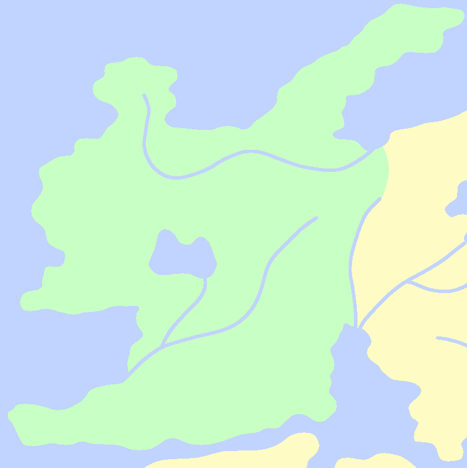
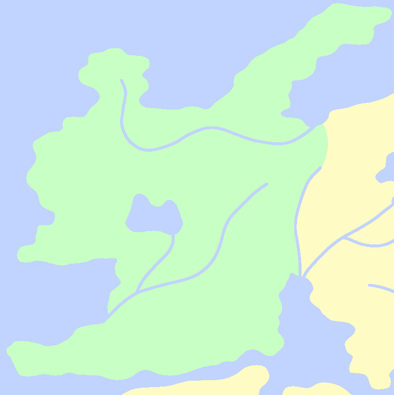

Antiri
The city of Himboppidum in Antiri is renowned for not only being one of the rare cities that utilize electric power, but also for being the birthplace of the great runist Malus Firoe. Firoe, along with the fury dragon Uilyse Hemos, helped introduce a second wave of rune glyphs to the world. He went on to later invent the runeblade.
Antiri is one of the largest producers of winter fruits, though the region often finds itself in competition with the farmers of Godspine.
Close